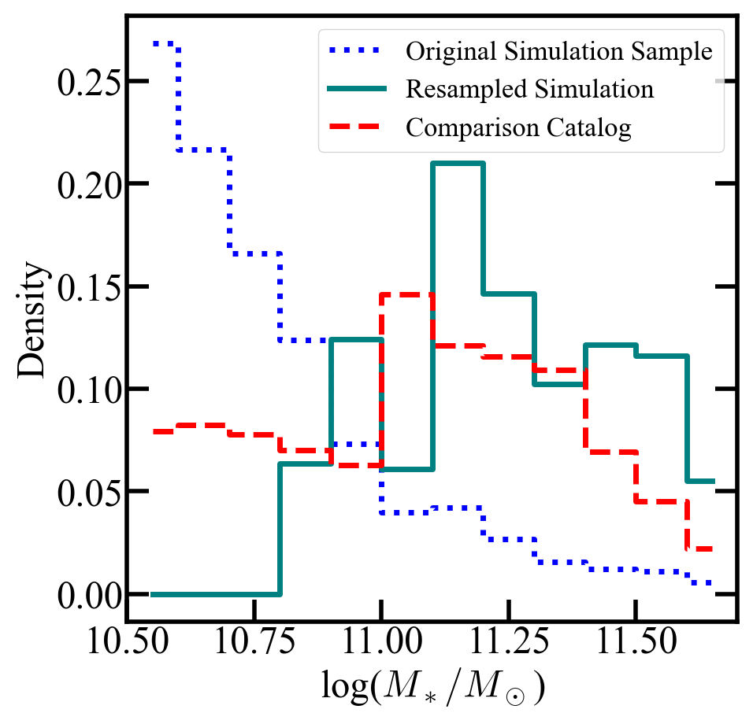
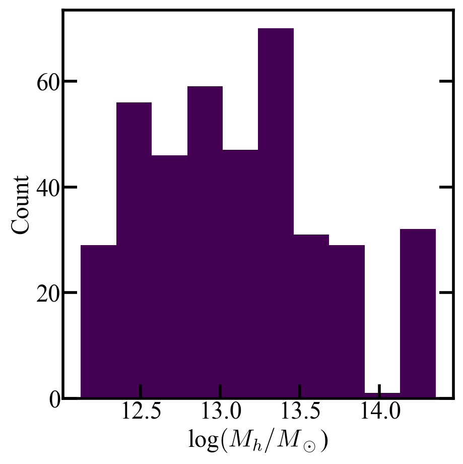

Exploring Your Galaxy Sample¶
After generating your stacked data, it will be useful to explore the properties of the chosen galaxy sample. The output data files include metadata/galaxy_indices, which provides the indices of the selected galaxies. These can be used in combination with the provided galaxy catalog files to access galaxy property information. In the example below, we explore the properties of the galaxy sample selected for our example X-ray analysis. This involved match galaxy stellar masses with a resampling count of N=400. The configuration file settings used to generate this sample can be found at cookbook/xraycookbook.
Note
The matching approach to galaxy sample selection includes random selection during the resampling process, so your galaxy sample may be slightly different than the example shown here.
#-------------------------LOADING THE DATA-----------------------------#
import numpy as np
from matplotlib import pyplot as plt
import pandas as pd
import h5py
from matplotlib.colors import LogNorm
data_file = '../testing/rafiki_A_example_xraydat.hdf5'
with h5py.File(data_file, 'r') as f:
sim_name = f['metadata'].attrs['simulation']
redshift = f['metadata'].attrs['redshift']
indices = f['metadata'].attrs['galaxy_indices']
path_to_package_data = '/Volumes/easystore/RAFIKI_CGM_mock_library/' #Should be the same as package_data.path in your configuration file
red_shift = {'0.1':'0_1', '0.5':'0_5', '1':'1', '1.0':'1','2':'2','2.0':'2','1.':'1','2.':'2'} #To correctly generate data directory
if redshift not in red_shift:
raise ValueError(f"Redshift '{redshift}' not recognized. Valid options are: 0.1, 0.5, 1, 2")
path = path_to_package_data+sim_name+'/snap_z'+red_shift[redshift]+'/galaxy_catalog.hdf5'
with h5py.File(path, 'r') as f:
stell = f['galaxy_properties/stellar_mass'][:]
dm_mass = f['galaxy_properties/dm_mass'][:]
m200c = f['galaxy_properties/m200c'][:]
r200c = f['galaxy_properties/r200c'][:]
halo = f['galaxy_properties/m500c'][:]
rad = f['galaxy_properties/r500c'][:]
age = f['galaxy_properties/age'][:]
sfr = f['galaxy_properties/sfr'][:]
central = f['galaxy_properties/central'][:]
#-------------------------LOADING COMPARISON CATALOG-----------------------------#
obs_catalog = '../keep_CEN.csv' #should match selection.catalog.path in config file
obs_data = np.array(pd.read_csv(obs_catalog, header=None))
bins = [10.5, 10.6,10.7, 10.8, 10.9, 11, 11.1,11.2, 11.3, 11.4, 11.5, 11.6, 11.7]
obs_hist,bin_edges = np.histogram(obs_data,bins=bins)
obs_hist_norm =obs_hist/np.sum(obs_hist)
#-------------------------GALAXY STELLAR MASS DISTRIBUTIONS-----------------------------#
# Show the distribution for the comparison catalog, the original simulation sample, and the resampled selection
resampled_data = np.log10(stell)[indices]
orig_hist,b = np.histogram(np.log10(stell), bins=bins)
orig_hist_norm = orig_hist/np.sum(orig_hist)
res_hist,b = np.histogram(resampled_data, bins=bins)
res_hist_norm = res_hist/np.sum(res_hist)
bin_centers = 0.5 * (bin_edges[:-1] + bin_edges[1:])
plt.step(bin_centers, orig_hist_norm, where='mid',
color='blue', linestyle=':', linewidth=5, label='Original Simulation Sample')
plt.step(bin_centers, res_hist_norm, where='mid',
color='teal', linestyle='-', linewidth=5,label='Resampled Simulation')
plt.step(bin_centers, obs_hist_norm, where='mid',
color='red', linestyle='--', linewidth=5, label='Comparison Catalog')
plt.legend(fontsize=25)
plt.xlim(10.5,11.7)
plt.xlabel('log($M_*/M_\odot$)')
plt.ylabel('Density')
plt.show()
{kind=link}

#-------------------------GALAXY HALO MASS DISTRIBUTION-----------------------------#
#Show the distribution of halo masses for the selected sample
plt.hist(np.log10(halo)[indices])
plt.ylabel('Count')
plt.xlabel('log$(M_h/M_\odot$)')
plt.show()
{kind=link}
